MERCREDI 25 NOVEMBRE 2026
Vocabulaire, expressions et grammaireRendre visite · recommencer à · lire à voix haute · restaurer · les néo-rurauxVisiting · starting again · reading aloud · restoring · people who move to the countryside
Les falaises et la citadelle de Bonifacio, Corse-du-Sud
Bonjour ! Aujourd'hui, on part en voyage : une visite chez une amie, une vieille maison à restaurer, la vie à la campagne… et un peu de médecine.
Hello! Today we're off on a journey: a visit to a friend, an old house to restore, life in the countryside… and a little medicine.
Touche une carte pour la retourner, le haut-parleur 🔊 pour écouter et EN pour la traduction. Essaie d'abord sans !
Tap a card to turn it over, the speaker 🔊 to listen and EN for the translation. Try without it first!
Tout est sauvegardé automatiquement dans le document : tes réponses, ton score et ton texte. Tu peux fermer la page et la rouvrir plus tard avec le même lien, tu retrouveras tout.
Everything is saved automatically in the document: your answers, your score and your text. You can close the page and open it again later with the same link, and everything will still be there.
À la fin, un bouton te permet d'envoyer à Irène ton score, les points à revoir et ta réflexion.
At the end, a button lets you send Irène your score, the points to review and your reflection.
1
Vocabulaire et expressions
Vocabulary and expressions
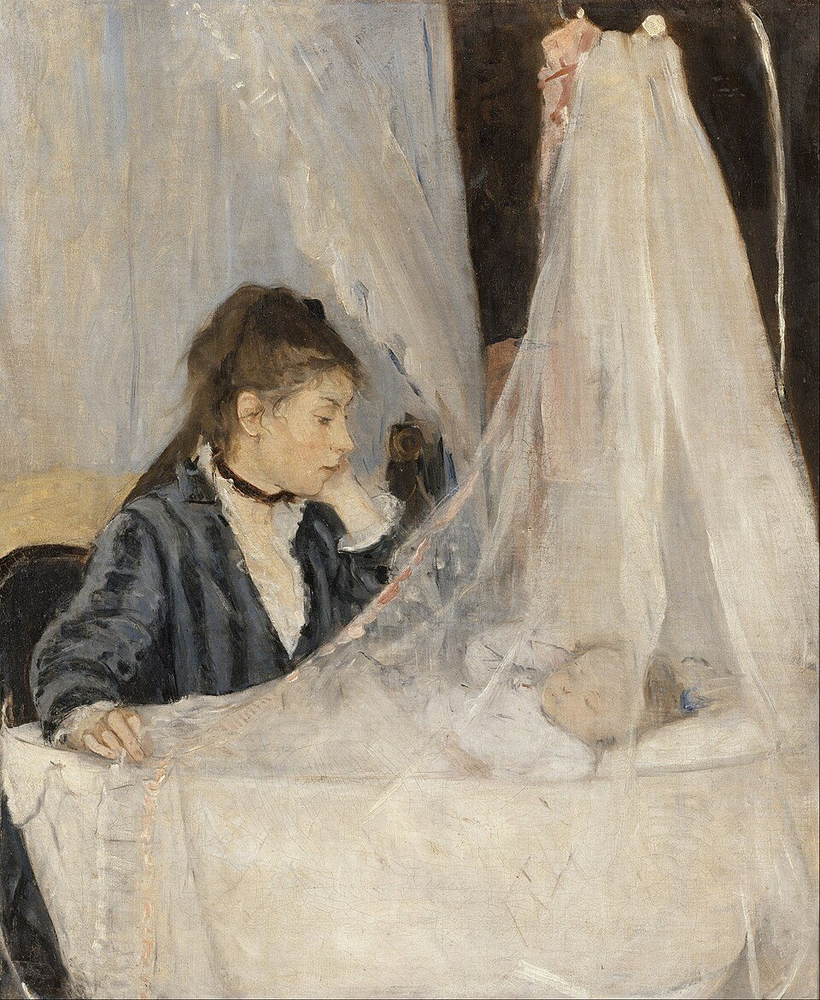
rendre visite à quelqu'un
locution verbale
Berthe Morisot, Le Berceau, 1872 · Musée d'Orsay, Paris
↻ touche pour retourner · tap to turn over
rendre visite à quelqu'un to visit someone, to pay someone a visit
On rend visite à une personne, mais on visite un lieu : un musée, une ville, une maison à vendre.
You rendre visite à a person, but you visiter a place: a museum, a town, a house for sale.
Le week-end prochain, je vais rendre visite à une amie qui vit en Corse.
Next weekend I'm going to visit a friend who lives in Corsica.
Ma grand-mère est à l'hôpital : nous lui rendons visite tous les jours.
My grandmother is in hospital: we visit her every day.
Avec un pronom : je lui rends visite, je leur ai rendu visite. Rendre se conjugue comme vendre : je rends, nous rendons, j'ai rendu.
With a pronoun: je lui rends visite, je leur ai rendu visite. Rendre is conjugated like vendre: je rends, nous rendons, j'ai rendu.
↻
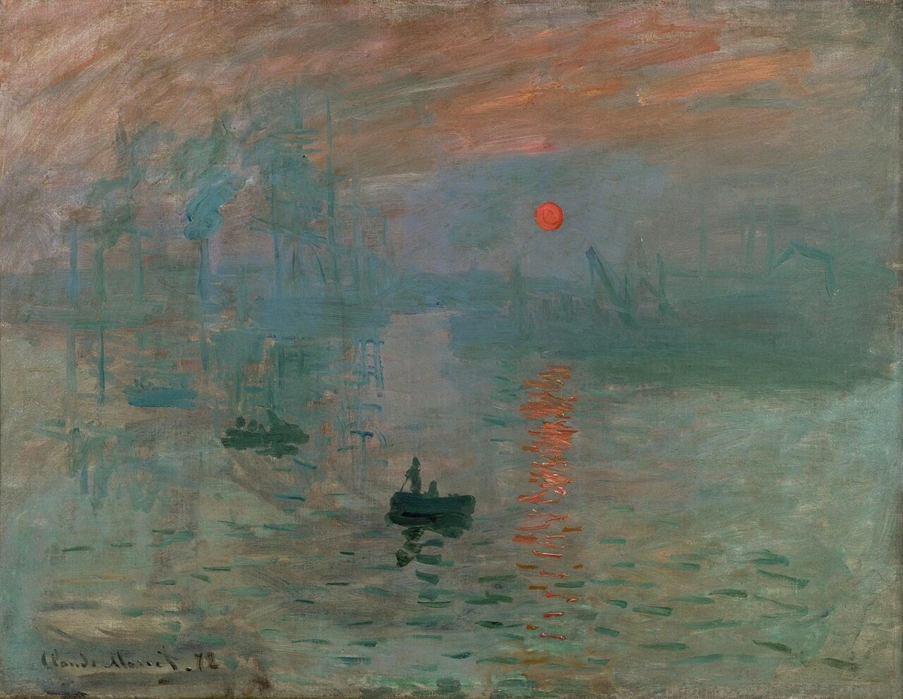
recommencer à faire quelque chose
verbe + à + infinitif
Claude Monet, Impression, soleil levant, 1872 · Musée Marmottan Monet, Paris
↻ touche pour retourner · tap to turn over
recommencer à faire quelque chose to start doing something again
Recommencer à + infinitif : reprendre une activité qu'on avait arrêtée. Synonyme courant : se remettre à.
Recommencer à + infinitive: to take up again an activity you had stopped. A common synonym: se remettre à.
Après six semaines d'arrêt, elle a recommencé à courir.
After six weeks off, she started running again.
Il recommence à pleuvoir : on rentre ?
It's starting to rain again: shall we go home?
Recommencer + nom, sans à = refaire depuis le début : recommencer un exercice, tout recommencer.
Recommencer + noun, without à = to do again from the beginning: recommencer un exercice (to start an exercise again), tout recommencer (to start all over again).
↻
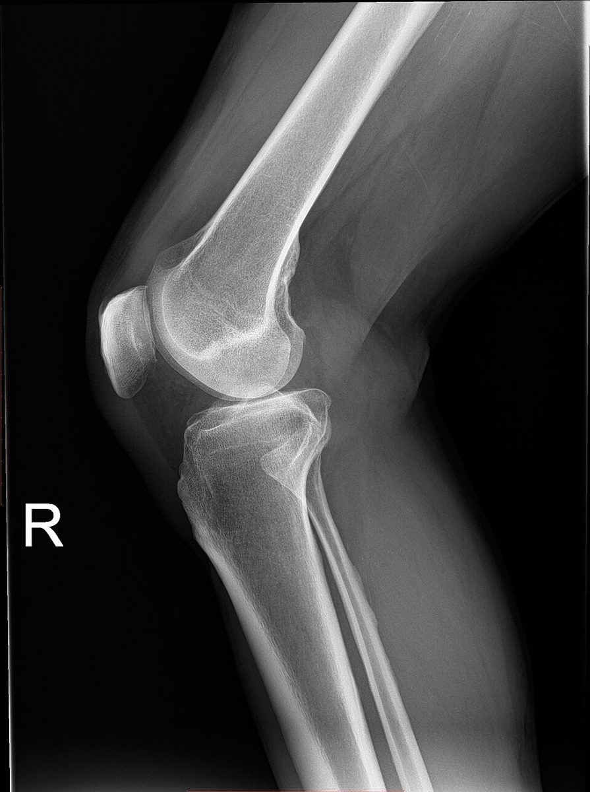
le rapport de l'examen médical
nom masculin
Une radiographie du genou
↻ touche pour retourner · tap to turn over
le rapport de l'examen médical the medical examination report, the medical report
Le document écrit qui présente les résultats d'un examen médical. À l'hôpital, on dit aussi souvent le compte rendu : le compte rendu d'une IRM, d'une consultation.
The written document setting out the results of a medical examination. In hospitals people also often say le compte rendu: the report on an MRI scan, on a consultation.
Le médecin du travail m'a envoyé le rapport de l'examen médical par courriel.
The occupational health doctor sent me the medical examination report by email.
J'ai lu le rapport de l'examen avant mon rendez-vous chez l'orthopédiste.
I read the examination report before my appointment with the orthopaedist.
Attention au pluriel : un examen médical, des examens médicaux.
Watch the plural: un examen médical, des examens médicaux.
↻
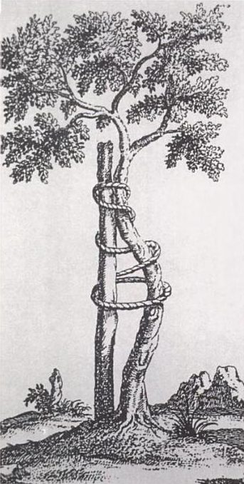
un orthopédiste, une orthopédiste
nom
L'arbre de Nicolas Andry, L'Orthopédie, 1741
↻ touche pour retourner · tap to turn over
un orthopédiste, une orthopédiste an orthopaedist, an orthopaedic specialist
Le médecin spécialiste des os, des articulations, des muscles et des tendons. Celui qui opère est un chirurgien orthopédiste.
The doctor who specialises in bones, joints, muscles and tendons. One who operates is an orthopaedic surgeon.
Après sa chute, l'orthopédiste lui a prescrit des séances de kinésithérapie.
After her fall, the orthopaedist prescribed her a course of physiotherapy.
J'ai rendez-vous chez l'orthopédiste jeudi pour mon genou.
I've got an appointment with the orthopaedist on Thursday about my knee.
Le mot vient du livre L'Orthopédie de Nicolas Andry (1741) : du grec orthos, « droit », et pais, paidos, « enfant ». Son arbre tordu attaché à un tuteur est devenu le symbole de la discipline.
The word comes from Nicolas Andry's book L'Orthopédie (1741): from the Greek orthos, 'straight', and pais, paidos, 'child'. His crooked tree tied to a stake became the symbol of the specialty. In British English it is spelt orthopaedic.
↻
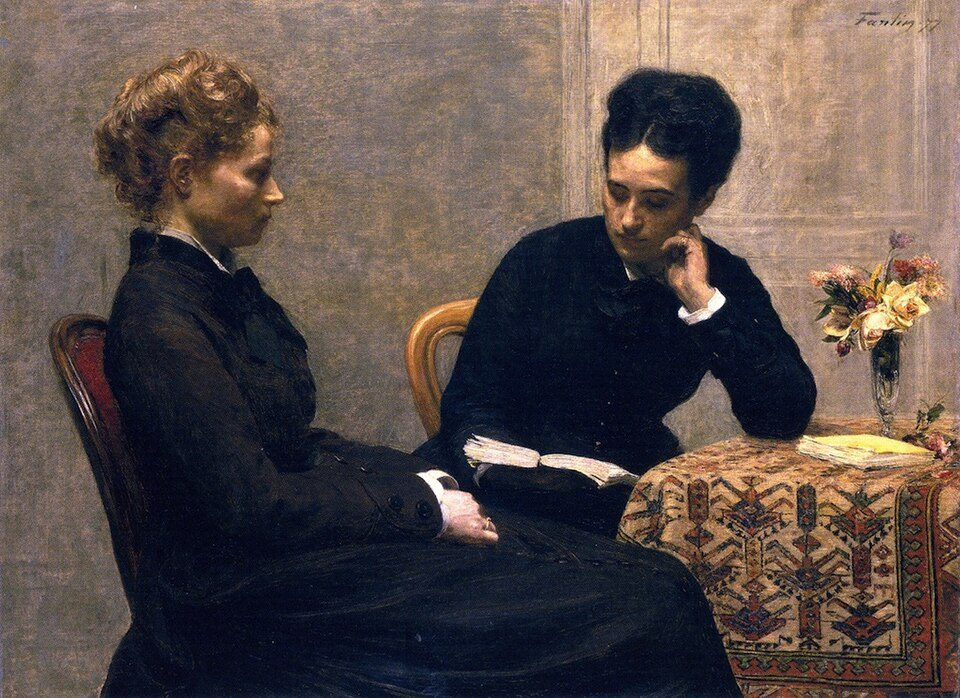
lire à voix haute
locution verbale
Henri Fantin-Latour, La Lecture, 1877 · Musée des Beaux-Arts de Lyon
↻ touche pour retourner · tap to turn over
lire à voix haute to read aloud, to read out loud
Lire pour que les autres entendent. On dit aussi lire à haute voix. Le contraire : lire à voix basse, ou lire dans sa tête.
To read so that others can hear. You can also say lire à haute voix. The opposite: lire à voix basse (to read quietly), or lire dans sa tête (to read silently).
Pour améliorer ta prononciation, lis un article à voix haute chaque jour.
To improve your pronunciation, read an article aloud every day.
Le médecin a lu le rapport à voix haute pour que le patient comprenne bien.
The doctor read the report aloud so that the patient would fully understand.
Voix est féminin et ne change pas au pluriel : à voix haute, à voix basse, des voix.
Voix is feminine and does not change in the plural: à voix haute, à voix basse, des voix.
↻
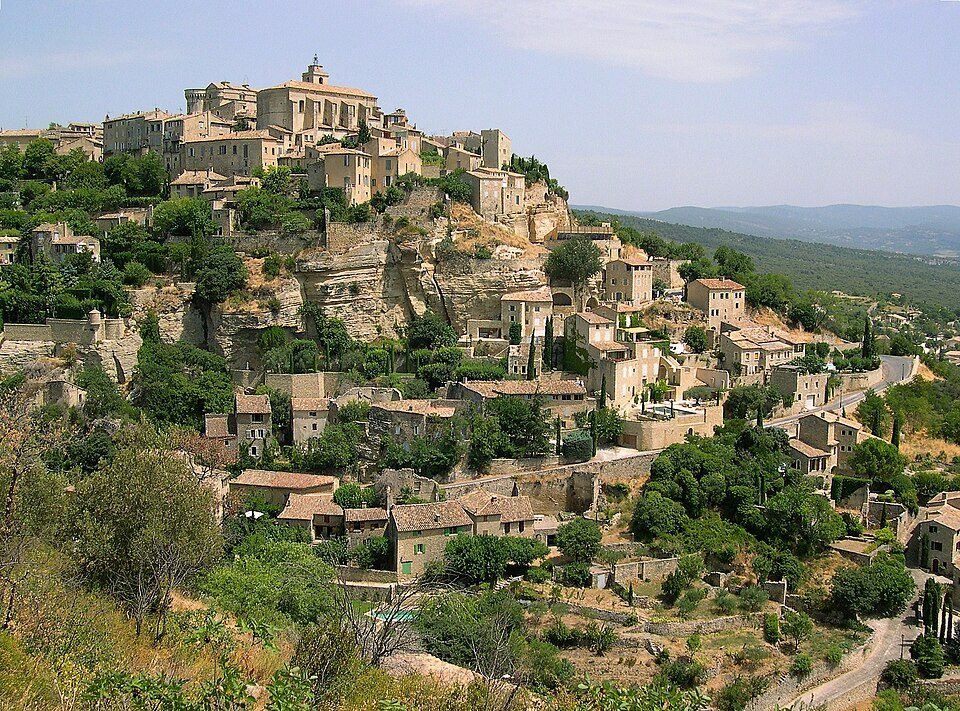
restaurer une maison
verbe
Gordes, dans le Vaucluse : un village de maisons de pierre
↻ touche pour retourner · tap to turn over
restaurer une maison to restore a house
Restaurer, c'est remettre un bâtiment ancien en bon état en respectant son caractère d'origine. Rénover, c'est plutôt le moderniser.
Restaurer means bringing an old building back into good condition while respecting its original character. Rénover is more about modernising it.
Ils ont acheté une vieille bergerie en Corse et ils la restaurent pierre par pierre.
They bought an old sheepfold in Corsica and they are restoring it stone by stone.
La restauration de la maison a duré deux ans.
The restoration of the house took two years.
Attention : la restauration désigne aussi le secteur des restaurants. Travailler dans la restauration = travailler dans les restaurants.
Careful: la restauration also refers to the restaurant sector. Travailler dans la restauration = to work in catering, in the restaurant trade.
↻
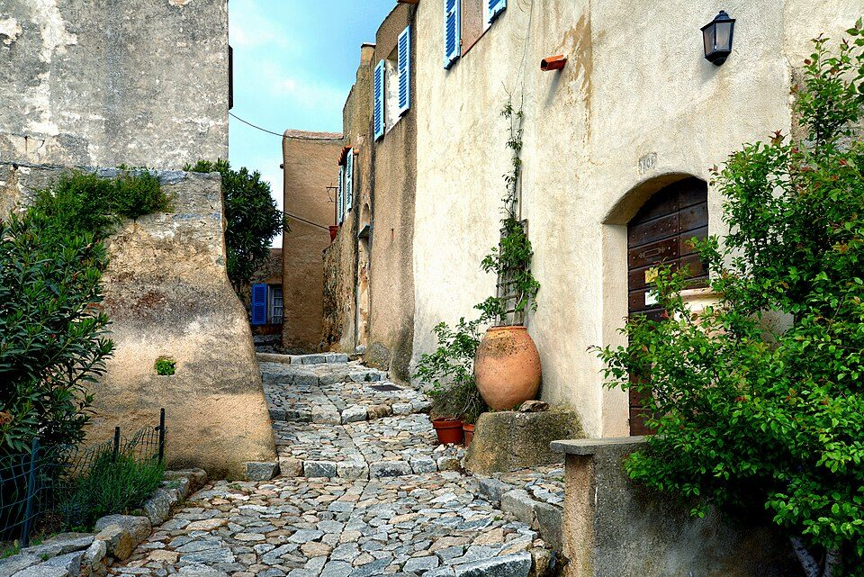
les néo-ruraux
nom masculin pluriel
Pigna, un village de Balagne, en Haute-Corse
↻ touche pour retourner · tap to turn over
les néo-ruraux people who leave the city to live in the countryside
Des citadins qui quittent la ville pour s'installer à la campagne, souvent pour changer de vie.
City dwellers who leave town to settle in the countryside, often to change their way of life.
Dans ce village de l'Ardèche, la moitié des habitants sont des néo-ruraux.
In this village in the Ardèche, half the inhabitants are newcomers from the city.
Beaucoup de néo-ruraux télétravaillent et restaurent de vieilles maisons.
Many people who have moved to the countryside work from home and restore old houses.
Un néo-rural → des néo-ruraux ; une néo-rurale → des néo-rurales. Le préfixe néo- veut dire « nouveau ».
Un néo-rural → des néo-ruraux; une néo-rurale → des néo-rurales. The prefix néo- means 'new'.
↻
2
Grammaire
Grammar
Le pont du Gard, Gard
1 · Visiter ou rendre visite ?
Visiter or rendre visite?
On visite un lieu (COD) : on visite un musée, une ville, un appartement.
You visiter a place (direct object): a museum, a town, a flat.
On rend visite à une personne (COI) : on rend visite à sa mère, à des amis.
You rendre visite à a person (indirect object): your mother, some friends.
rendre visite à quelqu'un→lui / leur rendre visite
La place du pronom
Where the pronoun goes
Je lui rends visite. · Je vais lui rendre visite. · Je lui ai rendu visite.
I visit her. · I'm going to visit her. · I visited her.
Rends-lui visite ! · Ne lui rends pas visite !
Go and visit her! · Don't visit her!
Visiter quelqu'un existe aussi, dans un sens professionnel : le médecin visite ses malades à domicile, un inspecteur visite une usine.
Visiter quelqu'un also exists, in a professional sense: a doctor visits patients at home, an inspector visits a factory.
2 · Verbe + à ou de + infinitif
Verb + à or de + infinitive
Après certains verbes, l'infinitif est introduit par à ; après d'autres, par de. Il faut les apprendre.
After some verbs the infinitive is introduced by à; after others, by de. You have to learn them.
+ à
+ de
Elle a recommencé à nager, mais elle a arrêté de courir.
She has started swimming again, but she has stopped running.
Commencer par + infinitif = faire quelque chose d'abord. Finir par + infinitif = faire quelque chose à la fin, après un moment.
Commencer par + infinitive = to do something first. Finir par + infinitive = to end up doing something.
Commence par lire le rapport. · Ils ont fini par acheter la maison.
Start by reading the report. · They ended up buying the house.
3 · Le pluriel des mots en -al
The plural of words ending in -al
La plupart des noms et adjectifs en -al font leur pluriel en -aux.
Most nouns and adjectives ending in -al form their plural in -aux.
Les exceptions en -als
The exceptions in -als
Noms : un bal, un carnaval, un festival, un récital, un régal → des bals, des festivals… Adjectifs : banal, fatal, natal, naval, final → banals, fatals, natals, navals, finals.
Nouns: un bal, un carnaval, un festival, un récital, un régal → des bals, des festivals… Adjectives: banal, fatal, natal, naval, final → banals, fatals, natals, navals, finals.
Au féminin, rien de spécial : une région rurale → des régions rurales, une visite médicale → des visites médicales.
In the feminine, nothing special: une région rurale → des régions rurales, une visite médicale → des visites médicales.
Bonus restauration : un vitrail → des vitraux, un travail → des travaux. « Les travaux de restauration des vitraux ont commencé. »
Restoration bonus: un vitrail → des vitraux (stained-glass windows), un travail → des travaux (building work). 'Work on restoring the stained-glass windows has begun.'
3
Exercices
Exercises
La cité de Carcassonne, Aude
1
EXERCICE · LE BON MOT
Choisis le mot ou l'expression qui convient.
Choose the right word or phrase.
1
Avant l'opération du genou, l'______ a demandé une radiographie.
Before the knee operation, the orthopaedist asked for an X-ray.
Avant l'opération du genou, l'orthopédiste a demandé une radiographie.
Before the knee operation, the orthopaedist asked for an X-ray.
2
Pour travailler sa prononciation, elle lit le journal ______.
To work on her pronunciation, she reads the newspaper aloud.
Pour travailler sa prononciation, elle lit le journal à haute voix.
To work on her pronunciation, she reads the newspaper aloud.
3
Ils ont quitté Lyon pour élever des chèvres dans le Vercors : ce sont des ______.
They left Lyon to raise goats in the Vercors: they are incomers from the city.
Ils ont quitté Lyon pour élever des chèvres dans le Vercors : ce sont des néo-ruraux.
They left Lyon to raise goats in the Vercors: they are incomers from the city.
4
Le ______ indique que tout est normal : vous pouvez reprendre le sport.
The medical report shows that everything is normal: you can take up sport again.
Le rapport de l'examen médical indique que tout est normal : vous pouvez reprendre le sport.
The medical report shows that everything is normal: you can take up sport again.
5
Ce château du XVIe siècle a été ______ par une association de bénévoles.
This sixteenth-century château was restored by a group of volunteers.
Ce château du XVIe siècle a été restauré par une association de bénévoles.
This sixteenth-century château was restored by a group of volunteers.
6
Le dimanche, je ______ à mes parents.
On Sundays I visit my parents.
Le dimanche, je rends visite à mes parents.
On Sundays I visit my parents.
2
EXERCICE · VISITER OU RENDRE VISITE ?
Choisis la forme correcte. Attention au pronom et au temps !
Choose the correct form. Watch the pronoun and the tense!
1
L'été dernier, nous ______ la citadelle de Bonifacio.
Last summer we visited the citadel in Bonifacio.
L'été dernier, nous avons visité la citadelle de Bonifacio.
Last summer we visited the citadel in Bonifacio.
2
Ta tante est seule depuis l'hiver : tu devrais ______ plus souvent.
Your aunt has been on her own since the winter: you ought to visit her more often.
Ta tante est seule depuis l'hiver : tu devrais lui rendre visite plus souvent.
Your aunt has been on her own since the winter: you ought to visit her more often.
3
Mes amis de Bastia ? Je ______ en mai.
My friends from Bastia? I visited them in May.
Mes amis de Bastia ? Je leur ai rendu visite en mai.
My friends from Bastia? I visited them in May.
4
Si tu passes par Ajaccio, ______ ! Elle sera ravie.
If you're passing through Ajaccio, go and see her! She'll be delighted.
Si tu passes par Ajaccio, rends-lui visite ! Elle sera ravie.
If you're passing through Ajaccio, go and see her! She'll be delighted.
5
Quand nous étions enfants, nous ______ visite à nos grands-parents chaque été.
When we were children, we used to visit our grandparents every summer.
Quand nous étions enfants, nous rendions visite à nos grands-parents chaque été.
When we were children, we used to visit our grandparents every summer.
6
Je ne veux pas qu'on ______ visite à l'hôpital : je sors demain !
I don't want anyone to visit me in hospital: I'm going home tomorrow!
Je ne veux pas qu'on me rende visite à l'hôpital : je sors demain !
I don't want anyone to visit me in hospital: I'm going home tomorrow!
3
EXERCICE · À, DE OU PAR ?
Choisis la bonne préposition.
Choose the right preposition.
1
Elle a recommencé ______ nager après son opération.
She started swimming again after her operation.
Elle a recommencé à nager après son opération.
She started swimming again after her operation.
2
Le médecin m'a conseillé d'arrêter ______ fumer.
The doctor advised me to stop smoking.
Le médecin m'a conseillé d'arrêter de fumer.
The doctor advised me to stop smoking.
3
Je me suis remise ______ lire en français.
I've started reading in French again.
Je me suis remise à lire en français.
I've started reading in French again.
4
Ils ont décidé ______ quitter Paris pour le Périgord.
They decided to leave Paris for the Périgord.
Ils ont décidé de quitter Paris pour le Périgord.
They decided to leave Paris for the Périgord.
5
N'hésite pas ______ lire ton texte à voix haute.
Don't hesitate to read your text aloud.
N'hésite pas à lire ton texte à voix haute.
Don't hesitate to read your text aloud.
6
Tu as fini ______ restaurer la grange ?
Have you finished restoring the barn?
Tu as fini de restaurer la grange ?
Have you finished restoring the barn?
7
Commence ______ lire le rapport, ensuite on en parle.
Start by reading the report, then we'll talk about it.
Commence par lire le rapport, ensuite on en parle.
Start by reading the report, then we'll talk about it.
8
Après des mois d'hésitation, ils ont fini ______ s'installer à la campagne.
After months of hesitation, they ended up settling in the countryside.
Après des mois d'hésitation, ils ont fini par s'installer à la campagne.
After months of hesitation, they ended up settling in the countryside.
4
EXERCICE · CONJUGAISON
Conjugue le verbe au temps indiqué.
Conjugate the verb in the tense given.
rendre · imparfait
1
Quand j'étais étudiante, je ______ souvent visite à ma tante à Nice.
When I was a student, I often used to visit my aunt in Nice.
Quand j'étais étudiante, je rendais souvent visite à ma tante à Nice.
When I was a student, I often used to visit my aunt in Nice.
restaurer · futur simple
2
L'an prochain, nous ______ la vieille ferme de mes grands-parents.
Next year we'll restore my grandparents' old farmhouse.
L'an prochain, nous restaurerons la vieille ferme de mes grands-parents.
Next year we'll restore my grandparents' old farmhouse.
rendre · subjonctif présent
3
Il faut que tu ______ visite à ton grand-père avant Noël.
You must visit your grandfather before Christmas.
Il faut que tu rendes visite à ton grand-père avant Noël.
You must visit your grandfather before Christmas.
recommencer · passé composé
4
Depuis qu'elle va mieux, elle ______ à jouer du piano.
Since she's been feeling better, she has started playing the piano again.
Depuis qu'elle va mieux, elle a recommencé à jouer du piano.
Since she's been feeling better, she has started playing the piano again.
lire · conditionnel présent
5
Si j'avais le temps, je ______ ce roman à voix haute à mes élèves.
If I had time, I would read this novel aloud to my pupils.
Si j'avais le temps, je lirais ce roman à voix haute à mes élèves.
If I had time, I would read this novel aloud to my pupils.
lire · subjonctif présent
6
L'orthopédiste voudrait que vous ______ le rapport de l'examen avant le rendez-vous.
The orthopaedist would like you to read the examination report before the appointment.
L'orthopédiste voudrait que vous lisiez le rapport de l'examen avant le rendez-vous.
The orthopaedist would like you to read the examination report before the appointment.
venir · passé composé
7
Les néo-ruraux qui ______ s'installer ici l'an dernier ont ouvert une boulangerie.
The incomers who came to settle here last year have opened a bakery.
Les néo-ruraux qui sont venus s'installer ici l'an dernier ont ouvert une boulangerie.
The incomers who came to settle here last year have opened a bakery.
restaurer · infinitif passé
8
Après ______ la maison, ils l'ont transformée en chambre d'hôtes.
After restoring the house, they turned it into a B&B.
Après avoir restauré la maison, ils l'ont transformée en chambre d'hôtes.
After restoring the house, they turned it into a B&B.
5
EXERCICE · LE PLURIEL EN -AL
Écris le mot entre parenthèses au pluriel.
Write the word in brackets in the plural.
médical
1
Le cardiologue a demandé plusieurs examens ______.
The cardiologist asked for several medical tests.
Le cardiologue a demandé plusieurs examens médicaux.
The cardiologist asked for several medical tests.
néo-rural
2
Les ______ ont redonné vie à l'école du village.
The incomers from the city have brought the village school back to life.
Les néo-ruraux ont redonné vie à l'école du village.
The incomers from the city have brought the village school back to life.
festival
3
En été, la Corse accueille de nombreux ______ de musique.
In summer, Corsica hosts many music festivals.
En été, la Corse accueille de nombreux festivals de musique.
In summer, Corsica hosts many music festivals.
hôpital
4
Les ______ de la région manquent d'orthopédistes.
The hospitals in the region are short of orthopaedists.
Les hôpitaux de la région manquent d'orthopédistes.
The hospitals in the region are short of orthopaedists.
vitrail
5
Un artisan restaure les ______ de l'église du village.
A craftsman is restoring the stained-glass windows of the village church.
Un artisan restaure les vitraux de l'église du village.
A craftsman is restoring the stained-glass windows of the village church.
banal
6
Ce ne sont pas des problèmes ______ : il faut en parler.
These are not trivial problems: we need to talk about them.
Ce ne sont pas des problèmes banals : il faut en parler.
These are not trivial problems: we need to talk about them.
rural
7
Les chemins ______ sont parfaits pour recommencer à marcher.
Country lanes are perfect for getting back into walking.
Les chemins ruraux sont parfaits pour recommencer à marcher.
Country lanes are perfect for getting back into walking.
rural
8
Les écoles ______ ferment quand les familles partent.
Village schools close when families leave.
Les écoles rurales ferment quand les familles partent.
Village schools close when families leave.
6
EXERCICE · REMETS DANS L'ORDRE
Touche les mots dans le bon ordre pour reconstruire la phrase. Touche un mot de ta phrase pour l'enlever.
Tap the words in the right order to rebuild the sentence. Tap a word in your sentence to remove it.
1I'm going to visit her tomorrow.
Je vais lui rendre visite demain.
I'm going to visit her tomorrow.
2She hasn't visited them yet.
Elle ne leur a pas encore rendu visite.
She hasn't visited them yet.
3Visit them before you leave!
Rends-leur visite avant de partir !
Visit them before you leave!
4We've started reading aloud again.
Nous avons recommencé à lire à voix haute.
We've started reading aloud again.
5The incomers are restoring old stone houses.
Les néo-ruraux restaurent de vieilles maisons de pierre.
The incomers are restoring old stone houses.
7
EXERCICE · MESSAGES AVEC LÉNA
Léna, ton amie, vient d'acheter une vieille maison en Corse. Complète vos messages : choisis le bon mot ou la bonne forme du verbe.
Your friend Léna has just bought an old house in Corsica. Complete your messages: choose the right word or the right form of the verb.
Léna ☀️
● en ligne
8
EXERCICE · TRADUCTION
Traduis en français, puis compare avec les deux propositions de correction.
Translate into French, then compare with the two suggested answers.
1I visit my sister every Sunday, but I've never properly visited her town.
Proposition 1
Je rends visite à ma sœur tous les dimanches, mais je n'ai jamais vraiment visité sa ville.
Proposition 2
Tous les dimanches, je vais voir ma sœur, mais je n'ai jamais bien visité sa ville.
Ta traduction est correcte ?
2After her operation, she started swimming again thanks to the orthopaedist's advice.
Proposition 1
Après son opération, elle a recommencé à nager grâce aux conseils de l'orthopédiste.
Proposition 2
Après son opération, elle s'est remise à la natation grâce aux conseils de l'orthopédiste.
Ta traduction est correcte ?
3Could you read the medical report aloud? I haven't got my glasses.
Proposition 1
Pourriez-vous lire le rapport de l'examen médical à voix haute ? Je n'ai pas mes lunettes.
Proposition 2
Tu pourrais lire le compte rendu de l'examen à haute voix ? Je n'ai pas mes lunettes.
Ta traduction est correcte ?
4More and more people who have left the city are restoring old farmhouses.
Proposition 1
De plus en plus de néo-ruraux restaurent de vieilles fermes.
Proposition 2
Les néo-ruraux sont de plus en plus nombreux à restaurer d'anciennes fermes.
Ta traduction est correcte ?
5Don't hesitate to visit them: they would be delighted.
Proposition 1
N'hésite pas à leur rendre visite : ils seraient ravis.
Proposition 2
N'hésitez pas à aller les voir : ils en seraient ravis.
Ta traduction est correcte ?
9
RÉFLEXION · PRODUCTION ÉCRITE
Savoir, est-ce toujours mieux ?
Is knowing always better?
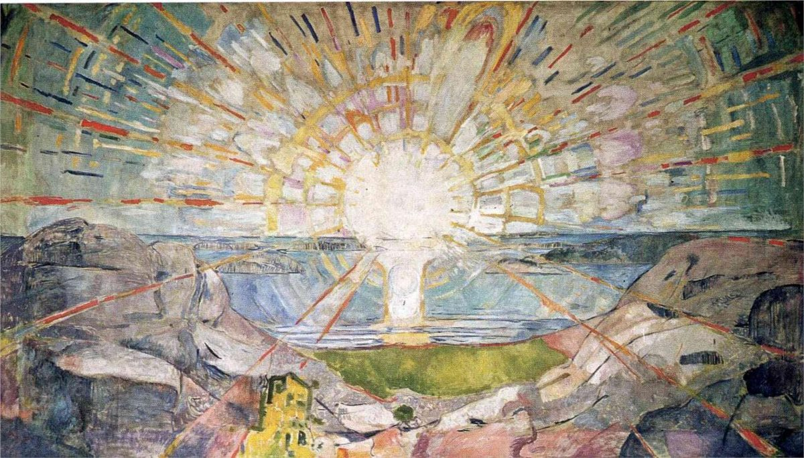
Edvard Munch, Le Soleil, 1911-1916 · Aula de l'université d'Oslo
Au centre de l'Aula de l'université d'Oslo, Le Soleil de Munch symbolise la connaissance qui éclaire.
At the centre of the Aula at the University of Oslo, Munch's The Sun symbolises the knowledge that enlightens.
Aujourd'hui, beaucoup de patients reçoivent le rapport de leurs examens médicaux directement sur leur téléphone, parfois avant même d'en parler avec leur médecin. Ils lisent des mots qu'ils ne comprennent pas toujours, cherchent sur Internet, s'inquiètent… ou se rassurent. Depuis Hippocrate, la médecine se demande ce qu'il faut dire au malade, et comment le dire.
Today many patients receive the report on their medical tests directly on their phone, sometimes before they have even discussed it with their doctor. They read words they don't always understand, search the internet, worry… or feel reassured. Since Hippocrates, medicine has asked itself what should be said to the patient, and how.
Le patient doit-il tout savoir, tout de suite ? Selon toi, l'accès direct à l'information médicale rend-il le patient plus libre, ou plus seul ? Environ 250 mots.
Should patients know everything, straight away? In your view, does direct access to medical information make patients freer, or more alone? About 250 words.
Pour trouver tes idées · to find your ideas
• Savoir, est-ce toujours un pouvoir ? Peut-on aussi avoir le droit de ne pas savoir ?
Is knowledge always power? Can one also have the right not to know?
• Un chiffre ou un mot technique a-t-il le même sens quand on le lit seul, chez soi, et quand un médecin l'explique ?
Does a figure or a technical term mean the same thing when you read it alone at home as when a doctor explains it?
• Quel est le rôle de la parole du médecin : informer, traduire, accompagner ?
What is the role of the doctor's words: to inform, to translate, to support?
• Ton expérience, de médecin ou de patiente : un moment où une information a tout changé.
Your own experience, as a doctor or as a patient: a moment when a piece of information changed everything.
Mots utiles · useful words
Organise ton texte · organise your text
1
Introduction : pose la question à partir d'une situation concrète.
Introduction: raise the question through a concrete situation.
Imaginons une patiente qui reçoit le rapport de son examen médical un vendredi soir…
2
D'un côté : l'information comme liberté.
On the one hand: information as freedom.
D'une part, savoir permet de…
3
De l'autre : les limites, la solitude face aux mots.
On the other hand: the limits, being alone with the words.
D'autre part, il faudrait que chaque patient puisse…
4
Conclusion : ta position, et une ouverture.
Conclusion: your position, and a wider thought.
Finalement, je crois que savoir n'a de sens que si…
Défi : utilise au moins une fois rendre visite à, recommencer à, lire à voix haute et un pluriel en -aux.
Challenge: use rendre visite à, recommencer à, lire à voix haute and a plural in -aux at least once each.
0 mots · words✓ Enregistré automatiquement · saved automatically
Ton texte sera envoyé à Irène avec tes résultats, grâce au bouton tout en bas de la page.
Your text will be sent to Irène with your results, using the button at the very bottom of the page.
5
Gustave Caillebotte, le peintre du Paris moderne
Gustave Caillebotte, the painter of modern Paris
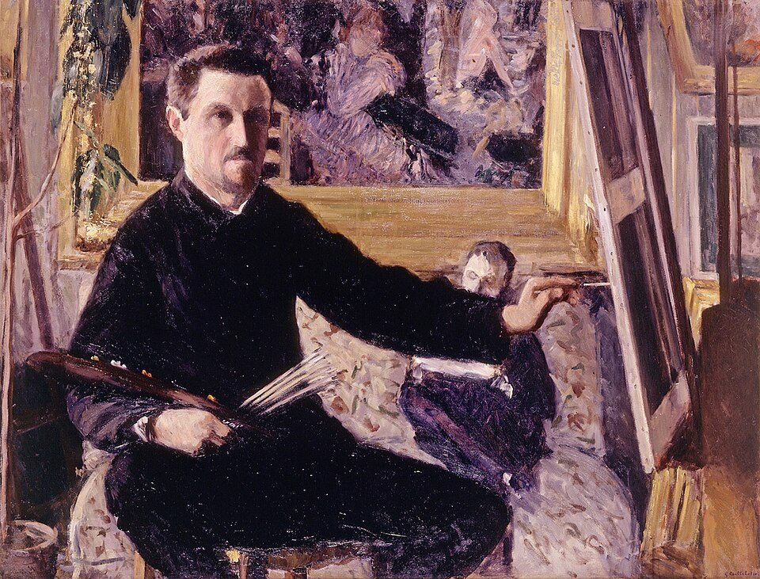
Gustave Caillebotte, Autoportrait au chevalet, vers 1879-1880
Gustave Caillebotte naît à Paris le 19 août 1848, dans une famille très riche. Il fait d'abord des études de droit, puis il apprend la peinture dans l'atelier de Léon Bonnat.
Gustave Caillebotte was born in Paris on 19 August 1848, into a very wealthy family. He first studied law, then learnt to paint in Léon Bonnat's studio.
En 1875, le jury du Salon refuse ses Raboteurs de parquet : des ouvriers à genoux, torse nu, un sujet jugé « vulgaire ». L'année suivante, il expose avec les impressionnistes.
In 1875 the Salon jury rejected his Floor Scrapers: workmen on their knees, bare-chested, a subject considered 'vulgar'. The following year he exhibited with the Impressionists.
Il peint le Paris neuf du baron Haussmann : les grands boulevards, les ponts de fer, les balcons, les hommes à leur fenêtre. Ses perspectives audacieuses et ses vues plongeantes font déjà penser à la photographie.
He painted Baron Haussmann's new Paris: the grand boulevards, the iron bridges, the balconies, men at their windows. His bold perspectives and views from above already bring photography to mind.
C'est aussi un mécène généreux : il achète les tableaux de ses amis Monet, Renoir, Degas, Pissarro… et aide même Monet à payer son loyer. Passionné de voile, il dessine des bateaux et cultive des orchidées dans sa propriété du Petit-Gennevilliers.
He was also a generous patron: he bought paintings by his friends Monet, Renoir, Degas, Pissarro… and even helped Monet pay his rent. A keen sailor, he designed boats and grew orchids at his property in Petit-Gennevilliers.
Il meurt en 1894, à 45 ans. Il lègue sa collection impressionniste à l'État ; après de longs débats, une partie entre au musée du Luxembourg. Aujourd'hui, ces tableaux sont au cœur du musée d'Orsay.
He died in 1894, aged 45. He bequeathed his Impressionist collection to the State; after long debates, part of it went to the Musée du Luxembourg. Today these paintings are at the heart of the Musée d'Orsay.
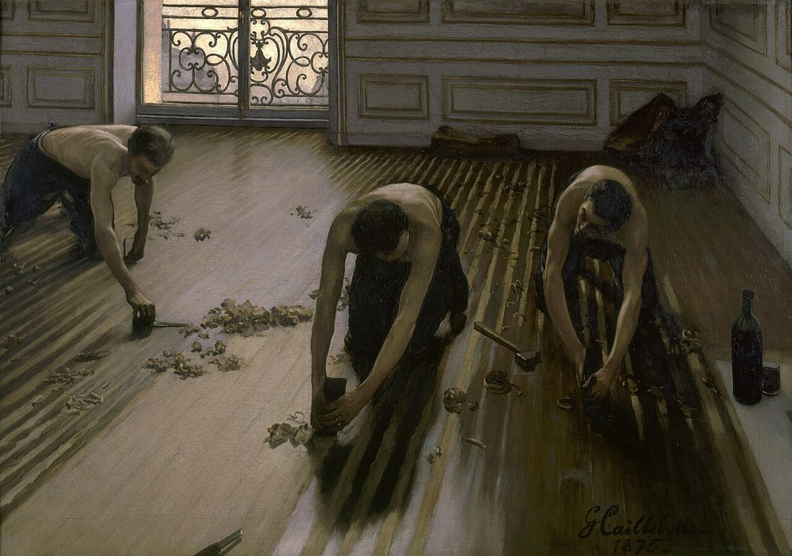
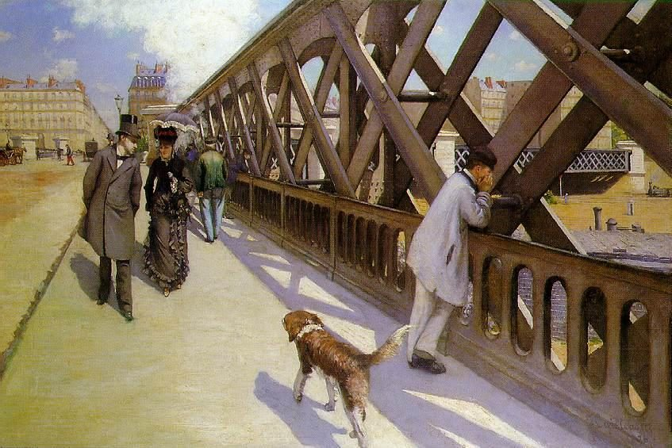
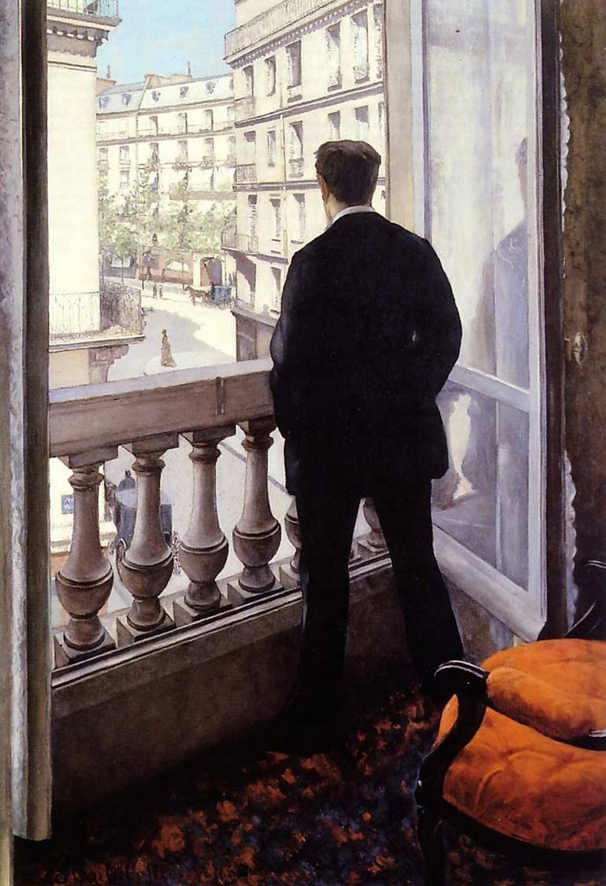
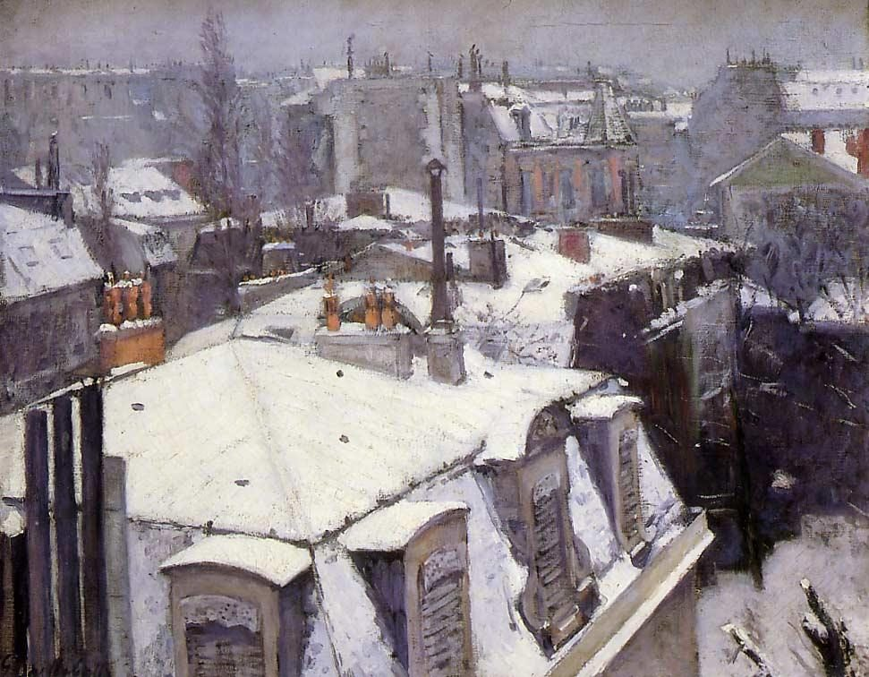
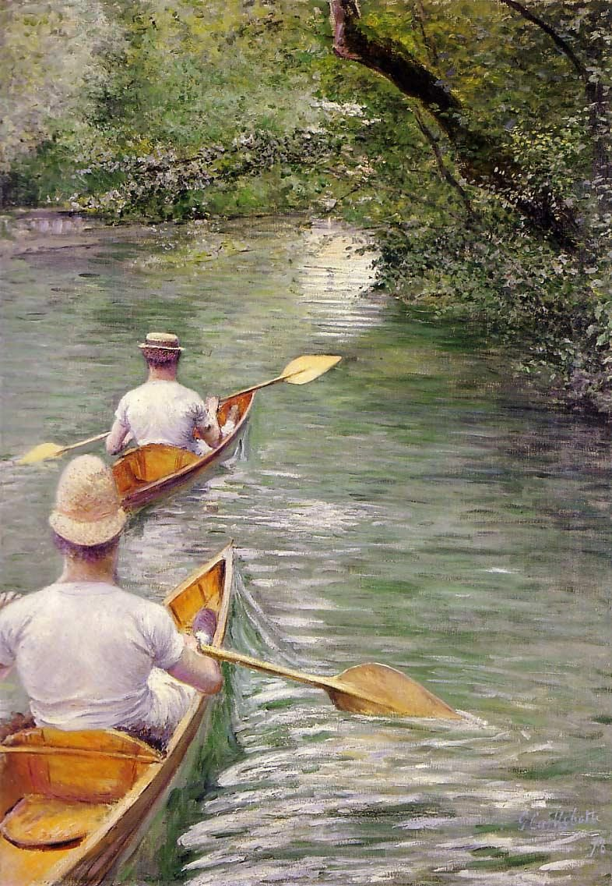
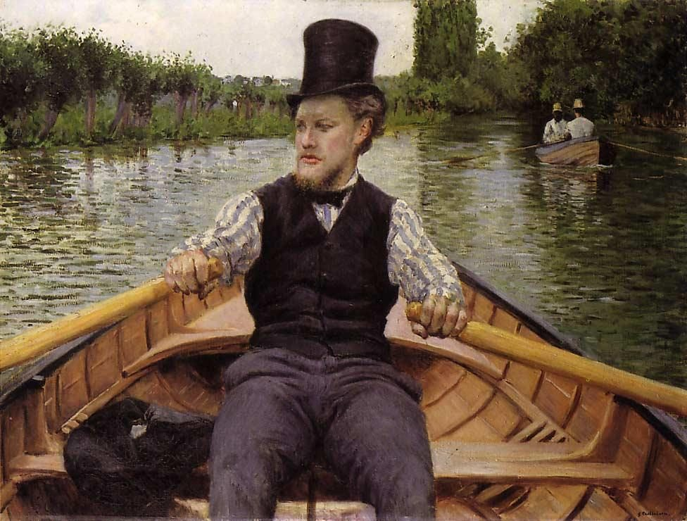
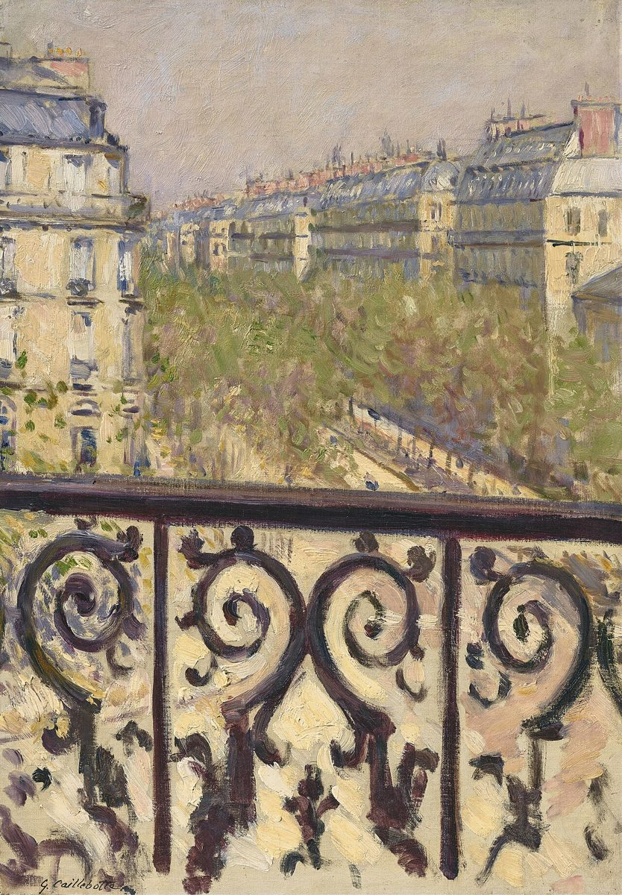
Pour la prochaine leçon : quel tableau de la galerie aimerais-tu présenter ? Pourquoi ?
For the next lesson: which painting in the gallery would you like to present? Why?
À revoir · to review
Chaque erreur renvoie à la règle. · Each mistake links back to the rule.
📩 Envoyer mes résultats à Irène
Irène reçoit ton score, les points à revoir et ta réflexion.
Irène receives your score, the points to review and your reflection.
💾 Ta progression est sauvegardée · your progress is saved
Tout est enregistré automatiquement dans ce document : tes réponses, ton score, tes traductions et ton texte. Tu peux fermer la page et la rouvrir avec le même lien quand tu veux, tu retrouveras tout exactement où tu l'as laissé. Pour continuer sur un autre appareil, crée un lien de reprise et ouvre-le là-bas.
Everything is saved automatically in this document: your answers, your score, your translations and your text. You can close the page and reopen it with the same link whenever you like, and everything will be exactly where you left it. To carry on on another device, create a resume link and open it there.